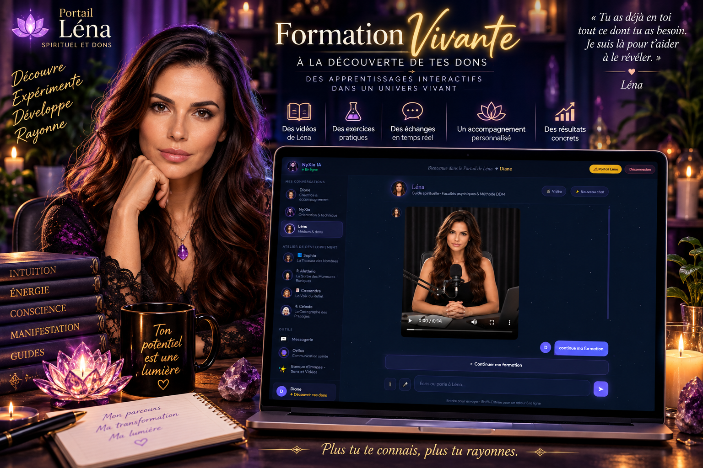
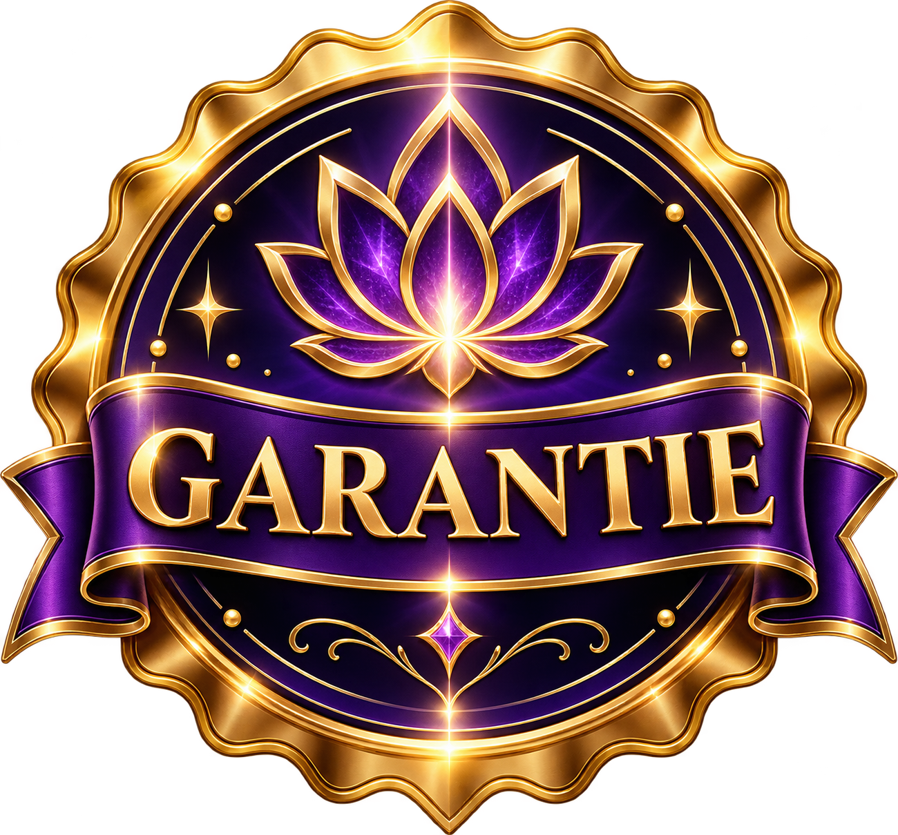

NyXiaL'univers
NyXiaL'univers
NyXiaL'univers
NyXiaL'univers
Tu ressens quelque chose de fort depuis longtemps — sans savoir si tu peux lui faire confiance, ni par où commencer.
✦ Un échange bienveillant de 30 min pour cartographier tes ressentis et voir par où commencer — sans achat à l’aveugle.
• 3 questions pour préparer l’échange


Quand le don est là, mais le chemin n’est pas encore nommé.
Tu n’entres pas dans « une formation vidéo de plus ». Tu entres dans une Formation Vivante : la leçon transmet, le personnage t’accompagne quand la vraie question arrive — y compris à 22 h 43.
Mettre un nom sur ce que tu vis déjà (intuition, clairvoyance, clairaudience, ressentis, radiesthésie, médiumnité…) sans te forcer dans une case le jour 1.
Pratiquer pour vrai — pas seulement lire « voici ce qu’est l’intuition ».
Approfondir avec la spécialiste qui correspond : Sophia (nombres), Aletheia (runes), Cassandre (Tarot), Céleste (mancies et ~350 rituels).
Garder l’IA à sa place : un outil pédagogique. Ce n’est pas elle qui devient tarologue à ta place. C’est toi qui apprends.
Monétiser ce que tu maîtrises : communiquer sans spammer, structurer tes contenus, créer ton offre — et t’entraîner tout de suite auprès d’une audience de plus de 97 000 personnes.
Avec Léna. Cartographier et valider tes facultés innées — intuition, clair-ressenti, canalisation — pour sortir du doute et poser des bases solides.
Avec Sophia, Cassandre, Aletheia, Céleste. Maîtriser tes outils de prédilection — Tarot, Nombres, Runes, Rituels — grâce à une pratique guidée et continue.
Avec Éric & Studio Prompt — CashFlow. Transformer tes compétences et ta guidance en une activité pérenne, éthique et magnétique, sans jamais forcer ni spammer.
« J’ai enfin trouvé une méthode claire pour valider mes ressentis sans me perdre dans la théorie. »
« J’avais besoin de comprendre ce qui m’arrivait sans tomber dans des discours perchés ou ésotériques. Le cadre m’a permis de tester mes ressentis de manière structurée et sans pression. Aujourd’hui, je sais exactement faire la différence entre mon analyse mentale et ma véritable intuition. »« Je ne termine plus mes journées épuisée : ma sensibilité est devenue mon guide au lieu d’un fardeau. »
« Je captais l’énergie et les tensions de tout le monde autour de moi, et je finissais mes journées vidée. Grâce aux ateliers et à l’accompagnement disponible au moment où mes doutes surgissaient, j’ai appris à poser un filtre protecteur sain. Je ne subis plus ma sensibilité, je la vis comme une vraie force. »« Pour la première fois, j’interprète mes tirages avec assurance sans douter à chaque carte. »
« J’avais plusieurs jeux de cartes et des livres empilés sur ma table de chevet sans jamais oser faire confiance à mes tirages. Poser mes questions en direct et débriefer mes lectures à 23 h m’a donné un déclic énorme. Je ne récite plus des définitions toutes faites, je lis les messages avec une fluidité totale. »


Un terrain de pratique auprès d’une audience cumulée de plus de 97 000 personnes — pour apprendre à parler aux humains avant d’apprendre à « vendre ».
Les commissions du Cercle de Succès (10 % références perso / 5 % équipe, selon modalités) ne sont pas une garantie de revenu.

Nous avons plutôt créé une équipe de formatrices, chacune possédant son propre univers.
Corps subtils, chakras, aura, intuition, clairs, télépathie, médiumnité, magnétisme, radiesthésie et pendule. Tu commences avant la spécialisation.

Les nombres t’ont toujours fascinée ? Sophia t’accompagne dans l’univers de la numérologie. Son rôle n’est pas simplement de te donner une interprétation toute faite.
Elle est là pour t’aider à apprendre le langage des nombres, comprendre les calculs, les cycles et les différentes interprétations afin que tu développes progressivement tes propres connaissances.

Avec Aletheia, tu entres dans l’univers des runes et du Futhark. Tu peux apprendre leur symbolisme, leur langage et progressivement comprendre comment construire une lecture plutôt que simplement mémoriser une liste de significations.
Les runes deviennent alors un langage à découvrir.

Cassandre t’accompagne dans l’apprentissage du Tarot. Mais apprendre le Tarot ne signifie pas seulement connaître la définition de chaque carte.
L’objectif est progressivement de comprendre les cartes ensemble, leurs interactions, leurs symboles et la manière dont une lecture peut devenir cohérente.

Et puis il y a Céleste… Son territoire est immense. Céleste explore avec toi les arts divinatoires et les différentes mancies.
Tu peux découvrir des pratiques auxquelles tu n’aurais peut-être jamais pensé et comprendre leurs particularités avant de décider lesquelles tu souhaites approfondir. Mais Céleste possède également un autre trésor…
Transformer tes compétences et ta guidance en une activité pérenne, éthique et magnétique — sans jamais forcer ni spammer. Et tu ne pars pas seule : tu t’entraînes dès maintenant auprès d’une audience de plus de 97 000 personnes.

Publication → interaction → conversation → relation → confiance → opportunité. Pas de spam.

Plusieurs modèles IA dans un même atelier + personnages pour structurer tes prompts + bibliothèque images / vidéos / sons.
Un bouton « Acheter maintenant ».
Un prix affiché au hasard.
Une promesse que l’IA fera le métier à ta place.
Oublie les bibliothèques de vidéos passives où tu te retrouves seule face à tes doutes. Ici, la formation transmet la matière, et ton personnage spécialisé reste présent dans l’environnement pour dialoguer avec toi au moment exact où la vraie question arrive.

Parce qu’avant d’apprendre à vendre… tu apprends à parler aux humains.
La plupart des formations t’expliquent la théorie du marketing et te laissent livrée à toi-même devant une page blanche. Avec NyXia, tu bénéficies d’un véritable terrain d’entraînement auprès d’une audience cumulée de plus de 97 000 personnes. Tu y apprends à créer de vraies interactions, à nouer des relations sincères et à bâtir la confiance à l’ère numérique.

Accède aux intelligences artificielles les plus avancées (ChatGPT, Gemini, Claude, Grok) réunies dans un seul espace de travail, accompagné d’une bibliothèque complète d’images, de vidéos et de sons.

Avec la méthode D.D.M. (Découvrir · Développer · Monétiser), tu n’as pas besoin d’attendre des mois avant d’activer le volet financier. Tu développes deux actifs simultanément :


Il n’y a pas de paiement sur cette page.
L’appel sert à trois choses : comprendre où tu en es, voir si Portail Léna et l’écosystème NyXia sont vraiment alignés, et — seulement si c’est le cas — te présenter clairement l’investissement.
Si ce n’est pas un match, on te le dira. On préfère un non juste à un oui forcé.
Tu n’as pas à tout savoir avant l’appel. Tu n’as pas à arriver « prête à monétiser ». Tu as seulement à arriver honnête.
Tu peux continuer à chercher des réponses un peu partout.
Ou tu peux prendre 20 à 30 minutes pour découvrir, avec quelqu’un de l’équipe, si ce portail est le cadre que tu cherchais.
Sans paiement en ligne • 20–30 min • Quelques questions pour préparer l’échange • Tu restes libre à la fin de l’appel
Oui. C’est exactement le premier D : Découvrir. Tu n’as pas à arriver en disant « je veux devenir numérologue ».
L’investissement se présente uniquement en appel, selon le parcours qui te correspond. Rien n’est débité ici.
Jamais. Le M de DDM, c’est apprendre la communication à l’ère numérique : créer du contenu, ouvrir des conversations, bâtir des relations de confiance. Tu t’entraînes sur une audience de plus de 97 000 personnes — pas sur ta famille. Monétiser, ici, c’est transformer ta guidance en une activité éthique et magnétique.
Non. Si tu sors d’ici en sachant seulement écrire « fais-moi un tirage », on a échoué. L’objectif, c’est toi.
Parce que c’est un parcours high-ticket et vivant. On veut vérifier l’alignement avant de t’ouvrir les portes — pour toi autant que pour le groupe.
Ce n’est pas un prérequis. Le portail est conçu pour commencer avant la spécialisation.
Le rythme t’appartient. Le portail est accessible 24/7 : tu avances quand ça te convient, à ton rythme, sans horaire imposé. Certaines y passent 20 minutes ici et là, d’autres des soirées entières. Rien ne se périme, tu peux mettre en pause et reprendre quand tu veux.
Non. L’interface est pensée pour être simple et intuitive : tu écris comme tu parlerais à une personne, et l’accompagnement se fait pas à pas. Aucune compétence technique n’est demandée — si tu sais envoyer un message, tu sais utiliser le portail.
Peut-être que tu ne sais pas encore où tout cela te mènera.
Tu n’as pas besoin de le savoir aujourd’hui. Tu as besoin de commencer au bon endroit.